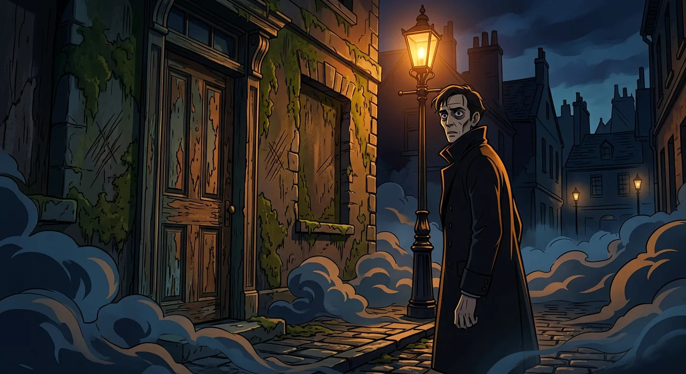
A Door's Dark Secret Revealed
Gabriel Utterson was a quiet London lawyer with a kind heart. He did not smile much, but he was a good friend. He never judged people, even when they made mistakes. That is why so many people trusted him.
Every Sunday, Utterson took a long walk with his cousin Richard Enfield. They did not talk very much, but they enjoyed being together. One day, they passed a strange building with an old, ugly door. It had no windows and looked forgotten and sad. Enfield told a story about that door. One dark night, he saw a grumpy little man bump into a young girl and knock her down. The man did not even say sorry. People got very angry with him. The mean man went through that strange door and came back with money to make things right. His name was Hyde. When Utterson heard this name, his face grew worried. He knew something secret about that door, and it made him think of his dear friend, Doctor Henry Jekyll.
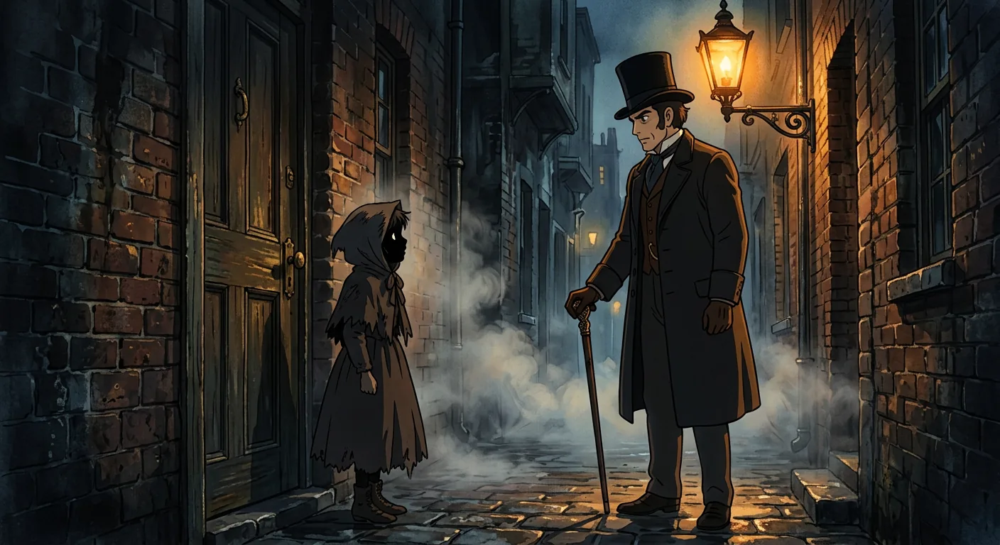
A Will That Breeds Dark Suspicion
That evening, Utterson could not stop thinking about his friend Jekyll. He went to his safe and took out an important paper. It was a will that Jekyll had written himself. The will said that if Jekyll ever went away, a man named Edward Hyde would get everything he owned. This worried Utterson very much.
Utterson visited another friend named Lanyon to ask about Hyde. But Lanyon did not know anyone by that name. He said he and Jekyll had not been close friends for a while now. So Utterson decided to find Hyde himself. He waited by a little door on a quiet street night after night. Finally, a small man came walking up. It was Hyde. Utterson spoke to him, but Hyde was not friendly at all. He seemed strange and unpleasant in a way that was hard to explain. Later, Utterson talked to Jekyll about the will and about Hyde. Jekyll looked worried but said everything was fine. He asked Utterson to promise to help Hyde if anything happened. Utterson promised, even though he still felt something was not quite right.
The rest is waiting.
58 illustrated classics. Cinematic, anime, and kids editions. $4.99 a month — about the price of a coffee.
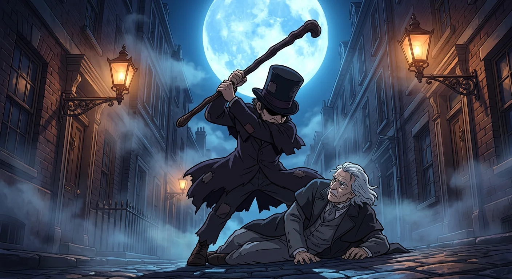
Moonlit Murder in the Fogbound Lane
Almost a year went by before anyone heard about Hyde again. Then something very sad happened on a foggy night in October. A kind old gentleman with white hair was walking down a moonlit lane. He looked so gentle and sweet. A young woman saw him from her window upstairs. She also saw Hyde walking toward him. The old man politely asked Hyde a question. But Hyde got very, very angry for no reason at all. He hurt the old man badly and then ran away into the night.
The police came and found a letter in the old man's pocket. It had Utterson's name on it. When Utterson arrived, he felt so sad. The old man was someone important, and the broken walking stick belonged to Doctor Jekyll. Utterson and a police officer went to find Hyde's home in a foggy part of the city. Hyde's rooms were fancy inside, but he was gone. His clothes were thrown everywhere, and papers were burned in the fireplace. No one could find Hyde anywhere. He had disappeared like a shadow.
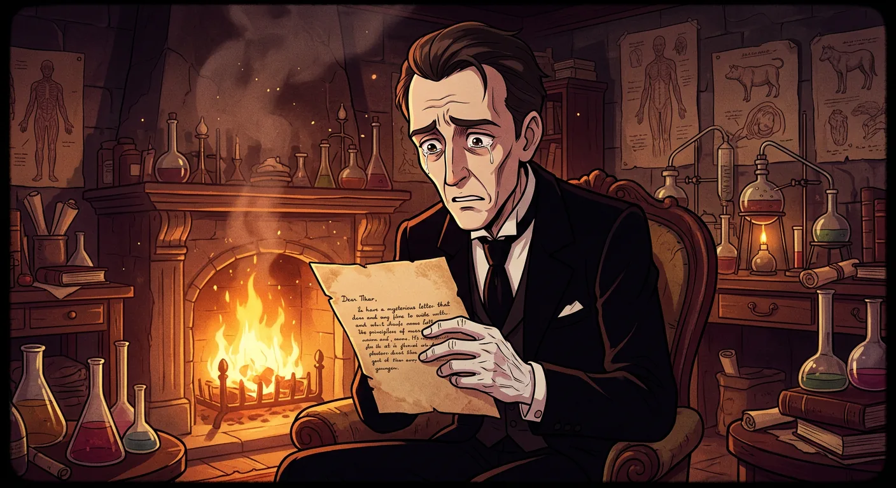
Jekyll's Fevered Promise of Escape
Utterson went to visit his friend Jekyll at his big old house. This time, the butler named Poole took him through the kitchen and across a messy yard to a building in the back. It used to belong to a doctor long ago, but now Jekyll used it for his science experiments. The rooms were dusty and quiet, with bottles and strange tools everywhere.
Inside, Jekyll sat by the fire looking very, very sick. His hands were cold and his voice sounded different. He told Utterson that something bad had happened to an important man in town, and that Hyde was the one who did it. Jekyll promised he would never see Hyde again, not ever. He seemed so worried and upset. He showed Utterson a letter that Hyde had written, saying goodbye. But later, Utterson found out something strange. No letter had come through the front door that day. Where did it really come from? This made Utterson feel puzzled and a little bit scared inside.
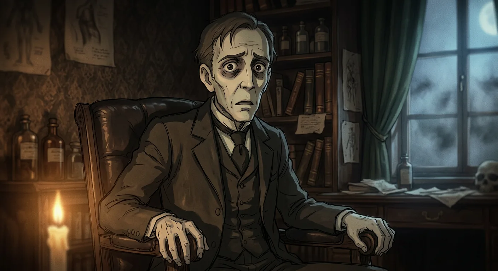
Jekyll's Brief Peace Shatters
As time passed, people started to forget about the scary thing that had happened. The mean man named Hyde was gone, and no one could find him anywhere. It was like he had disappeared into the fog. This made Utterson the lawyer feel much better.
Doctor Jekyll changed in a wonderful way! He came out of his house and started seeing his friends again. He was kind and helpful to everyone, and his face looked happy and bright. For two whole months, everything felt calm and good. But then something strange happened. Jekyll stopped answering his door when Utterson came to visit. He stayed inside and would not see anyone. Utterson went to visit their friend Lanyon instead, but Lanyon looked very sick and scared. He would not talk about Jekyll at all. Soon after, Lanyon passed away and left a sealed letter for Utterson. The letter had to stay closed until something happened to Jekyll. Utterson kept it safe, but he felt very worried about his friend hiding alone in his house.
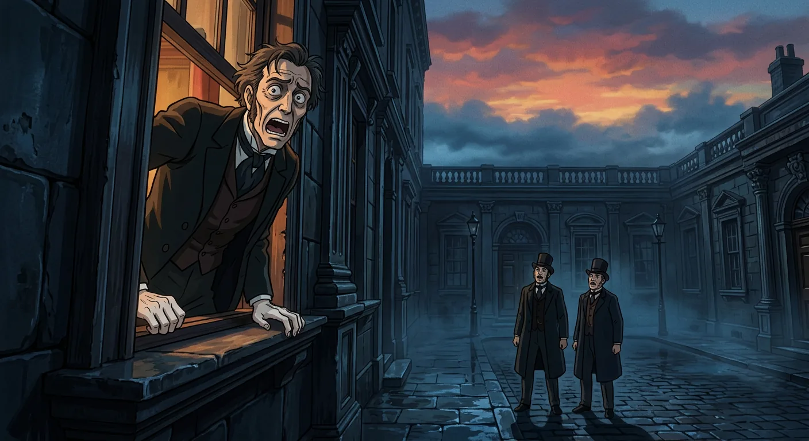
The Window's Glimpse of Horror
One Sunday, Utterson and his cousin Enfield took their usual walk. They stopped near a familiar door. It was the door where they had first talked about Hyde. Enfield said they would probably never see Hyde again. Utterson hoped this was true.
The two friends decided to peek into the courtyard nearby. They wanted to check on their dear friend, Doctor Jekyll. The courtyard felt cool and shadowy, but the sky above still glowed with sunset colors. There in a window sat Jekyll, looking very, very sad. Utterson called up to him and asked how he was feeling. Jekyll said he felt low but that things would change soon. Utterson invited him to come walk with them. Jekyll looked like he wanted to say yes, but he shook his head. He said he could not leave his room. Then something strange happened. Jekyll's face changed in a scary way, just for a moment. He quickly shut the window. The two friends walked away in silence, both feeling worried and puzzled about what they had seen.
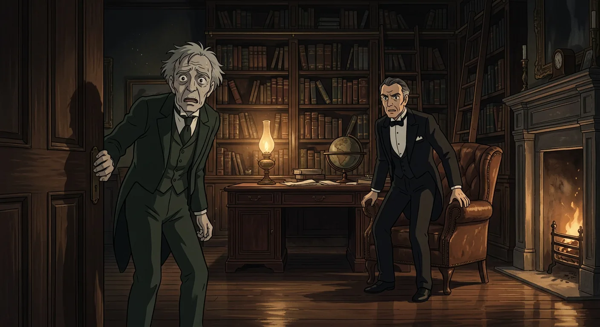
The Dreadful Night at Jekyll's Door
On a cold, windy evening, Poole came to see Utterson. Poole was Jekyll's helper, and he looked very worried. He said something was wrong at the doctor's house. Jekyll had locked himself in his special room for a whole week. He kept sending notes asking for medicine, but nothing seemed right. Poole had even seen a strange small figure hiding in the shadows. He did not think it was Jekyll anymore.
Utterson went with Poole back to the house. The other helpers were scared and huddled by the fire. Utterson and Poole walked to the locked door and listened. They heard footsteps pacing inside, but they did not sound like Jekyll's. Poole was very sure something bad had happened. So together, they broke down the door. Inside they found the room looking cozy, with a fire and tea things set out. But Jekyll was not there. On the floor lay Hyde, who had gotten very sick. And on the table, Utterson found letters from Jekyll asking him to read an important story that would explain everything.
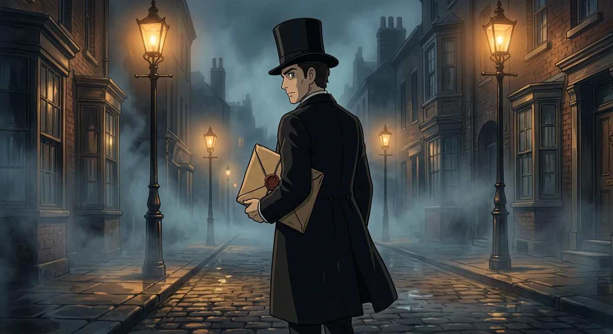
The Documents That Explain Everything
Poole gave Utterson a heavy packet wrapped up tight with wax and ribbon. It held important papers that would explain everything at last. Utterson was a careful man who wanted to protect his friend Jekyll. He decided not to tell anyone about the papers yet. He wanted to read them alone first and understand what had happened.
It was getting late, almost ten o'clock at night. Utterson said he would go home to read the papers in his quiet study. He promised to come back before midnight. Then they would figure out what to do next. The two men left the strange room together and locked the door behind them. Downstairs, the servants sat by the fire, looking worried and waiting for news. Utterson walked through the dark streets to his office, feeling very tired. Two letters waited for him there, ready to tell him the whole truth about his friend Henry Jekyll.
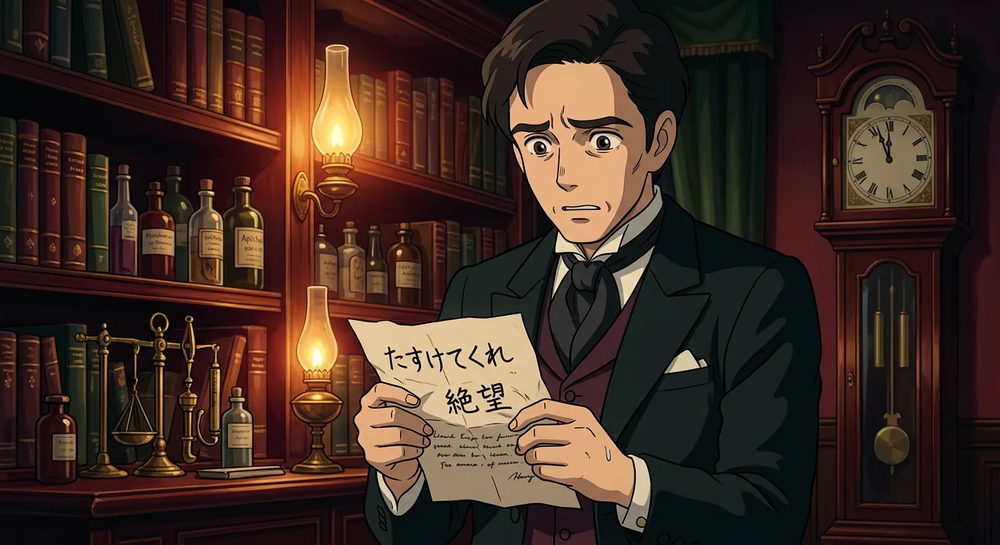
Lanyon's Midnight Mission for Jekyll
One evening, Doctor Lanyon got a very strange letter from his old friend Jekyll. They had been friends since they were boys at school together. The letter asked Lanyon to do something very important right away. Jekyll said he needed help more than he had ever needed anything before. He asked Lanyon to go to his house, find a special drawer with some powders and a little bottle inside, and bring these things home. Then, at midnight, a stranger would come to get them. Jekyll promised that if Lanyon did this, everything would be okay. But if he did not help, something terrible might happen. Lanyon thought the whole thing sounded very odd and a bit worrying. But he cared about his friend so much that he decided to do exactly what Jekyll asked. Now Lanyon waits in his quiet house, wondering who will knock on his door when the clock strikes twelve.
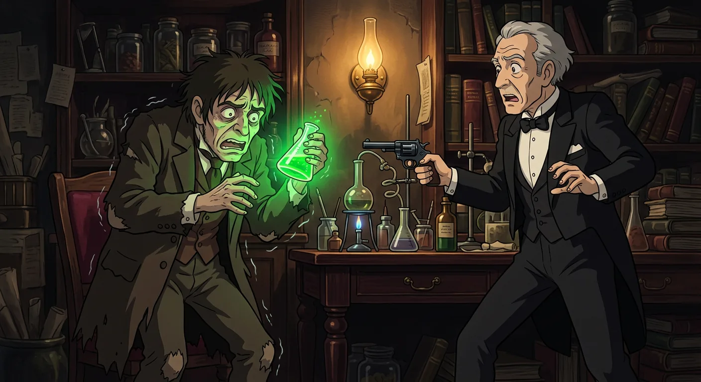
Lanyon's Midnight Encounter With Horror
Lanyon got a strange letter from his friend Jekyll. The letter asked him to go to Jekyll's house and find a special drawer. Lanyon thought his friend might be confused, but he wanted to help. So he went that night with some helpers who unlocked a door. Inside he found the drawer with powders and a little bottle of red liquid. He brought everything home and waited. At midnight, a small, nervous man knocked on the door. The visitor seemed scared and wore clothes that were much too big for him. He asked Lanyon for a glass and mixed the powders with the red liquid. The mixture bubbled and changed colors in a wonderful way. Then the visitor drank it. Something amazing happened next. The small man changed right before Lanyon's eyes. He became someone else entirely. It was Jekyll! Lanyon could hardly believe what he had seen that strange night.
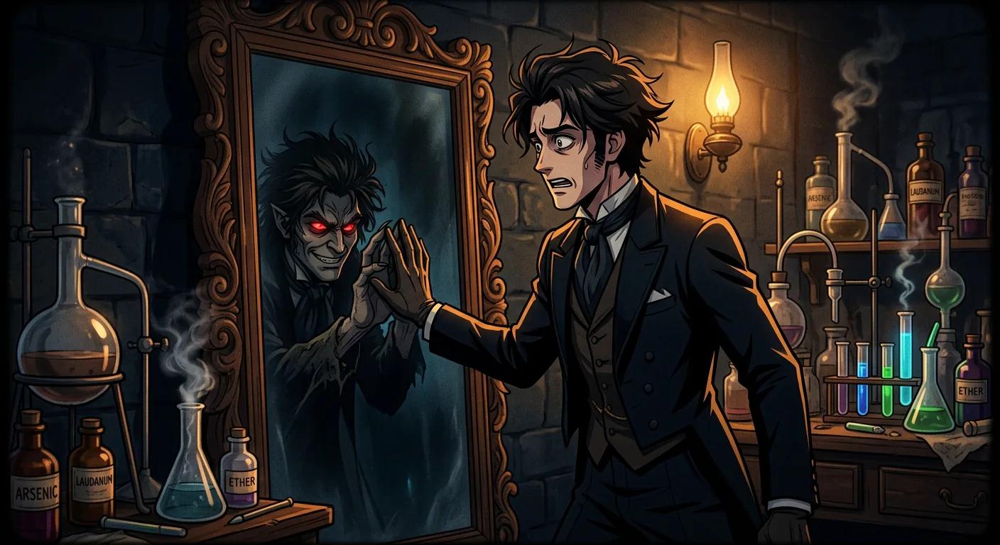
The Soul's Divided Nature Confessed
Henry Jekyll was a kind and smart doctor who wanted to be good. But sometimes he felt like being a little bit naughty too. He wondered if he could split himself into two people. One would be perfectly good, and one could do all the silly, mischievous things he was too proper to do.
So Jekyll made a special potion in his laboratory. When he drank it, he changed into someone else named Edward Hyde. Hyde was smaller and not very nice at all. At first Jekyll thought this was a fun game. He could be Hyde sometimes and then change back. But Hyde started doing mean things that made people upset. One time Hyde even hurt someone very badly, and Jekyll felt awful about it.
Soon the potion stopped working right. Jekyll kept turning into Hyde even when he did not want to. He got very scared and tired. In the end, Jekyll wrote down his whole story so his friends would understand what happened to him.
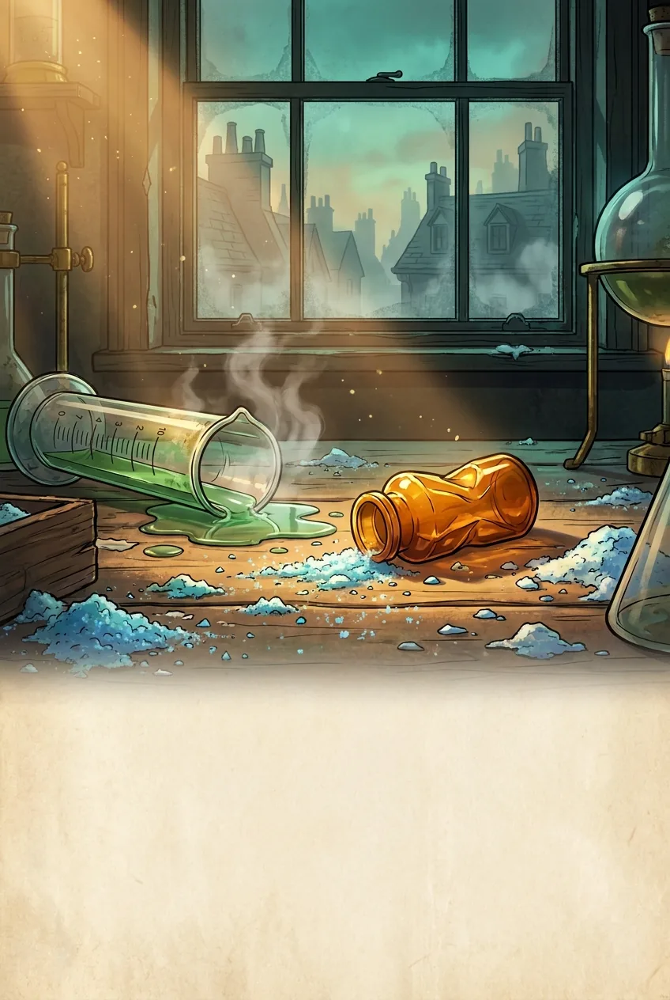